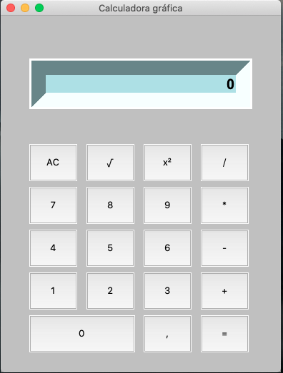

Dashboard análisis COVID-19 con Python y Dash
Para el manejo de esta proyecto, se hace por medio de pythonanywhere.com, que permite cargar proyectos en Python e instalar las librerias necesarias para su funcionamiento. Para el proyecto, se usa el periodo gratuito de tres meses y estará en funcionamiento hasta el 17 de junio del 2021
El ejercicio realizado de análisis sobre el COVID-19 de manera cuantitativa, muestra los contagios y fallecidos a nivel mundial, tomando como base los datos entregados por los entes oficiales.
Ese análisis fue realizado con Python, usando librerias como Pandas para la creación de los DataFrames y poder manejar los datos, Requests para llamar las bases de datos a usar, Json para poder crear los mapas con las respectivas coordenadas y Plotly para la creación de las gráficas.
Análisis COVID-19 con Python y Plotly
Para el manejo de esta proyecto, se exporta los archivos generados con Python y Plotly en html y se maneja como una pagina web estática. Los tiempos de carga son considerables, por el peso de cada uno de los html
El ejercicio realizado de análisis sobre el COVID-19 de manera cuantitativa, muestra los contagios y fallecidos a nivel colombia y mundial, tomando como base los datos entregados por los entes oficiales.
Ese análisis fue realizado con Python, usando librerias como Pandas para la creación de los DataFrames y poder manejar los datos, Requests para llamar las bases de datos a usar, Json para poder crear los mapas con las respectivas coordenadas y Plotly para la creación de las gráficas.
Calculadora en Python
Calculadora desarrollada con Python y tkinter, funciona de manera local.
Control inventario con PHP
Desarrollo con PHP y MySQL, es un programa que sirve para hacer seguimiento a un inventarios, donde se puede crear, actualizar y borrar información. Así mismo, se pueden crear un PDF con la información
Pagina grupo Musical
Se desarrolló página web del grupo musical Saint Gaarder, creada en HTML y CSS